6
IR Drop Analysis Results
- Overview
- Signal Net IR Drop Analysis
- Solid Shape Highlighting
- Displaying Finer Color Gradient for Selected Layers in IR and EM Plots
- Loading the DFII Layer Map File by Default
- Setting a Layer Index for Displaying Violations on the Layout
- The IR Drop Analysis Flow
- Types of IR Drop Analysis Plots
- Plotting the Least-Resistive Path
- Generating EMIR Analysis Reports in Voltus-Fi-L
- Reporting On-Resistance Values
Overview
Voltus-Fi-L uses the results of the simulation performed using the vavo-db or the parameter storage format (PSF) data to perform IR drop and EM analysis. The software provides both batch mode and GUI support for performing these analyses.
Signal Net IR Drop Analysis
By default, IR drop analysis can only be applied to power nets, which are nets driven by DC or constant voltage sources. The advanced feature, signal net IR drop analysis, lets you perform IR drop analysis on signal nets, which are nets that are not connected to any DC or constant voltage source.
In the signal net IR drop analysis, the maximum or average IR drop is reported using the analysis=[sigvmax sigvavg] statement in the EMIR control file (emir.config).
For details, see the
Solid Shape Highlighting
The rail analysis plots that are displayed on the Virtuoso Layout can be viewed as either stick diagrams or solid shape highlights. In the solid shape display, the plots highlight the full shape of the presistors, while in the stick diagram display, the presistors are connected through thin lines over the layout shapes.
The solid shape display is more useful for designers because it allows them to see the shapes that are failing the analysis. There are two flows for solid shape display. You can either specify the DFII layermap file or the QRC run name for viewing solid shape display for plots. When you specify the QRC run name, the plots are displayed based on the shape database generated by Quantus QRC.
For details, see the
Displaying Finer Color Gradient for Selected Layers in IR and EM Plots
In the DFII layermap flow, for solid shape display of IR/EM violations on the Virtuoso layout, Voltus-Fi-L locates all the nodes lying on a shape and then colors the shape with the worst violation value among all resistors connected to these nodes.
However, sometimes resistors do not align well with the shapes used to display the violations. This may be because the shapes are large and have multiple nodes and resistors. Voltus-Fi supports a finer display of the color gradient for violations in different segments of such layers. The shape polygons are split into subpolygons and then the subpolygons are colored with the worst violation value for all resistors connected to the nodes in the split shape. This feature is turned on by default for all layers. However, you can select specific layers to view their finer gradient instead of viewing for all layers.
For this, specify the DFII Layermap file and then click the Finer Gradient button provided on the IR or EM tabs of the IR/EM Results form. In the Finer Gradient Layer Selection pop-up, click Deselect All and then select the PGDB layers for which you want to view finer gradient. For details of the steps involved, see
Loading the DFII Layer Map File by Default
You can specify the path to the DFII Layer Map file in the GUI for both IR drop and EM analysis results in the DFII Layermap file field provided in both the IR and EM tabs of the IR/EM Results form. You can also use a variable to load the layer map file by default. For this, specify the DFII layer map file in either the .cdsinit or the .cdsenv file by using the vfiDfiiLayerMapFile environment variable. The syntax and example of specifying the path to the DFII layer map file is provided below.
-
In the
.cdsinitfile, specify the following:envSetVal("voltus_fi.results" "vfiDfiiLayerMapFile" 'string’
"amsPLL_oa_flow/df2layermap")
Where,
voltus_fi.resultsis the name of the tool
vfiDfiiLayerMapFileis the name of the variable
amsPLL_oa_flowis the path to the layer map file
df2layermapis the name of the layer map file -
In the
.cdsenvfile, specify the following:voltus_fi.results vfiDfiiLayerMapFile string "amsPLL_oa_flow/df2layermap"
Setting a Layer Index for Displaying Violations on the Layout
Voltus-Fi-L creates layers for displaying the EMIR violations when you plot them on the Virtuoso Layout. By default, the software uses more than a hundred layers for displaying violations. It creates these layers by using a layer index value or layer number that is equal to or greater than 256.
However, if you are already using the same layer number as that used by Voltus-Fi-L, a layer number conflict will occur and a warning will be issued. To avoid this warning, specify a different value for the layer number. You can specify the layer index value in either the .cdsinit or the .cdsenv file by using the vfiLayerIndex environment variable. The syntax and example of specifying the variable is provided below.
-
In the
.cdsinitfile, specify the following:envSetVal("voltus_fi.results" "vfiLayerIndex" 'int value’)
Where,
voltus_fi.resultsis the name of the software
vfiLayerIndexis the name of the variable
intis integer
valueis the layer index value
For example,envSetVal("voltus_fi.results" "vfiLayerIndex" 'int 270’)
-
In the
.cdsenvfile, specify the following:voltus_fi.results
For example,vfiLayerIndexint valuevoltus_fi.results
vfiLayerIndexint 270
The IR Drop Analysis Flow
In this section, the use model for the IR drop analysis flow is detailed for batch mode and GUI mode.
The IR Drop Analysis Batch Mode Flow
The IR drop analysis batch mode flow can be run using either the EMIR configuration file used in Voltus-Fi-XL or the command file used by VPS-L. The complete details of the batch mode flow are covered in the “Batch Mode Execution” chapter.
For details of the Voltus-Fi-L batch mode flow, see the following sections in the “Batch Mode Execution” chapter:
For details about migrating from VPS-L to Voltus-Fi-L in batch mode, see Migrating from VPS-L to Voltus-Fi-L in Batch Mode in the “Batch Mode Execution” chapter.
The batch mode IR drop analysis flow involves the following key tasks, which are detailed in the sections below:
Loading the IR Drop Analysis Results
When the VPS-L command file is used for running Voltus-Fi-L in the batch mode, you can load the IR drop analysis results by writing the following command in the vfibatch command file:
load_ir_results_extview -i cmd_file
cmd_file is the same batch file that is used in the VPS-L batch mode execution.
Printing the IR Drop Analysis Reports
When the EMIR configuration file is used for running Voltus-Fi-L in the batch mode, the IR drop analysis report, #.rpt_ir, is generated automatically by the tool.
When the VPS-L batch command file is used for running Voltus-Fi-L in the batch mode, the command, print_ir_report, is used to generate the IR drop analysis reports. This is the same command that is used to print IR drop analysis reports in Voltus-Fi-XL.
The syntax of the command is as follows:
print_ir_report
-net {all_power | netname}
-type {ir | iravg | rc | rcavg | rcrms}
[-threshold threshold_value]
-filename output_file_name]
-type parameter, only the analysis types listed in the syntax above are supported in the Voltus-Fi-L flow.For details of the above command and its parameters, see print_ir_report in the “Batch Mode Execution” chapter.
Sample Command Files for IR Drop Analysis
Sample command files used for running the IR drop analysis in batch mode in Voltus-Fi-L are provided below.
-
A sample batch command file, same as the VPS-L command file, used for IR drop analysis is provided below.
;vsa batch mode command file
;common commands for EM and IR
_vsa_extracted_lib_cell_view “amsPLL” “vco” “av_extracted_sol”
_vsa_testbench_lib_cell_view “amsPLL” “TB1_vco_single” “schematic”
_vsa_simulation_directory “/custom/TB1_vco_single/spectre/schematic/”
_vsa_pres_cellname “presistor”
_vsa_analysis_data “TRANSIENT”
;IR specific commands
;_vsa_analyze_IR “0” “170n”
_vsa_analyze_ir
exit
-
A sample batch command file, same as the EMIR configuration file, used for IR drop analysis is provided below.
DC Operating Point (DCOP) Analysis
================================
net name=[*] analysis=[vavg vmax]
emirutil view=[lib=amsPLL cell=vco view=av_extracted_vco_oa]
emirutil view_tb=[lib=amsPLL cell=TB1_vco_single view=schematic]
emirutil analysisType="dc"
emirutil analysisName="dcOp-dc"
emirutil presCellName="presistor"
emirutil qrc_output=[runDir=vco_lvs_oa runName=vco]
emirutil hierarchy="/X1”
The IR Drop Analysis GUI Flow
To view the IR drop analysis results in Voltus-Fi-L, ensure the following are provided:
-
The
emirmode is enabled while performing simulation - The name of the simulation result directory
- The DFII layermap file
- The Quantus QRC run directory
- The Quantus QRC run name
- The hierarchy name
- The presistor cell name
The following topics are covered in this section:
Viewing the IR Drop Analysis Results
Follow these steps to view the IR drop analysis results:
-
In the Voltus-Fi-L console, choose IR/EM Analysis menu – Rail Analysis Results. The IR/EM Results form opens.
-
Click the IR tab to plot the IR drop analysis results. This form is shown below.
Figure 6-1 IR/EM Results Form – The IR Tab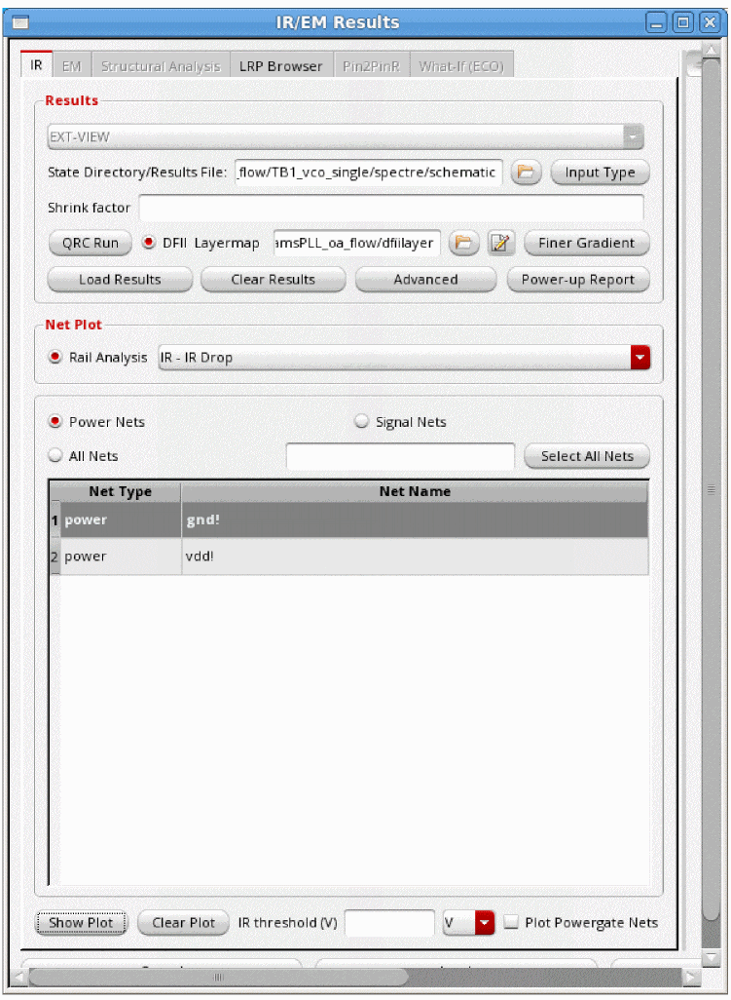
- The EXT_VIEW is already selected to enable the extracted view support.
- Specify the State Directory/Results File, which is the path to the simulation directory that stores the results of the simulation.
- Specify the Shrink factor, if any, by which the extracted view was shrunk. This is used for flows where the extracted view is generated with a shrunk technology but the layout remains on the original technology. For example, if the original extracted view was shrunk by 80%, the shrink factor should be specified as 0.8. The shrink factor value is less than 1.
-
Specify the Input Type Options to specify the type of data, PSF or VAVO_DB, to be used for the IR drop analysis. When you click this button, the Input Type Options pop-up window opens. This is shown below.You can also specify the input type options using the SKILL function, vsaSetInputType.Figure 6-2 Input Type Options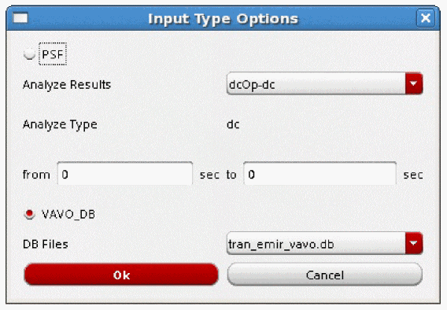In the above form, provide the following inputs:
-
Select either PSF or VAVO_DB depending upon the input data being used for the analysis. If your simulation data is in the
vavo.dbformat, the VAVO_DB option is selected by default. You can also specify this option in the batch mode by using the _vsa_vavo_db_file command. -
For the PSF data, specify the analysis type in the Analyze Results cyclic field. You can specify either DC operating point (DCOP) analysis or transient (
tran) analysis.- The DCOP analysis is recommended for large analog designs that are difficult to simulate in Spectre using transient analysis, especially when all parasitics are included.
-
The transient analysis option sets the simulation time in seconds automatically when the from/to fields are selected. For transient analysis, separate start and stop times can be specified using the from and to fields. You can also specify the start and stop time in the batch mode by using the _vsa_analyze_ir command in the command file for IR drop analysis. If you are using the
emir.conffile, specify theemirutilcommand options,analysisStartTimeandanalysisStopTime. If the start and stop times are not specified, the default is the full duration of the simulation.For details of theemirutilcommands supported in Voltus-Fi-L, see the EMIR Control File Options Supported in Voltus-Fi-L in the “Batch Mode Execution” chapter.
- When the analysis type is specified, the type of analysis is displayed in the Analyze Type field.
-
For the VAVO_DB data, select the DB Files from the list. This is the
vavo_dbfile to be used for the analysis. - Click OK.
-
Select QRC Run. Two text fields with browse buttons appear in the form. Click on the Browse buttons to open the pop-up windows, Select QRC Run Directory and Select QRC Run Name to specify the path to the QRC Run Directory and the QRC Run Name, respectively.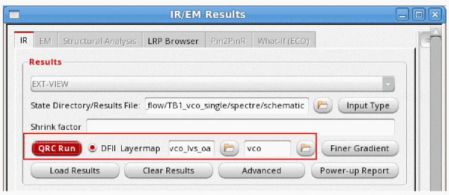
-
Select either PSF or VAVO_DB depending upon the input data being used for the analysis. If your simulation data is in the
-
Specify the DFII Layermap. This layermap file is the extracted view-to-DFII layermap file. When this file is specified, the plots displayed on the extracted view show solid shape highlighting. For details, see Solid Shape Highlighting. For a sample file, see DFII Layer Map File in the “File Formats” chapter.
You can also specify this file by using thevfiDfiiLayerMapFileenvironment variable in either the.cdsenvor the.cdsinitfile. For more information, see Loading the DFII Layer Map File by Default.
The following considerations apply to the DFII layermap flow:- When the DFII layermap file is specified, the visibility of the DFII layers on the layout is synchronized with the layers selected in the Layers group box or the layer selection window of the Display form.
- When the correct mapping in the DFII layermap file is either not specified or if some layers are missing in this file, then the resistors or nodes of those layers will not be highlighted on the layout because there will be no shapes attached to them.
-
When this file is not specified, the pop-up-window shown below opens. If you click Yes, the plots are displayed using stick diagrams.
-
For the DFII layermap flow, click Finer Gradient to view the finer gradient for the selected layers. When you click this button, the Finer Gradient Layer Selection pop-up window opens. This is shown in the figure below.
Figure 6-3 Selecting Layers for Viewing Finer Gradient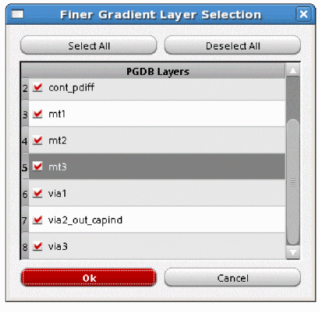In this window, all the layers are selected by default. Click Deselect All and then select specific PGDB layers for which you want to view finer gradient and click OK. For details, see Displaying Finer Color Gradient for Selected Layers in IR and EM Plots. -
Select Advanced. The Advanced Options form opens.
Figure 6-4 Advanced Options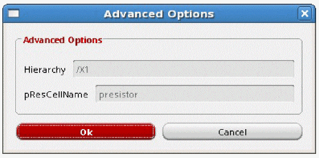In this form, specify the following: - Click Load Results to load the results of the IR drop Analysis. After the results are loaded, the list in the Net Plot group box is enabled.
- Once the results are loaded, the Rail Analysis cyclic field in the Net Plot group box becomes enabled. From the list, select the type of plot you want to view. The details of the plot types available are provided in Types of IR Drop Analysis Plots.
- Click Power Nets to list all power nets in the list box.
- Click Signal Nets to list all signal nets in the list box.
- Click All Nets to list all power and signal nets in the list box.
-
Click Select All Nets to select all the nets listed in the table. For example, if you select Power Nets and click Select All Nets, all power nets listed in the table are selected. The list box lists Net Type and the corresponding Net Name.
You can search for specific nets for which you want to plot results by typing the net name in the text field provided in the form. The list box is updated to display information about the specified net.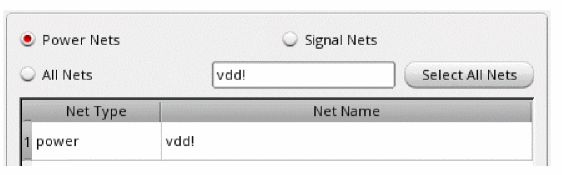An example of an IR plot for selected nets is shown in Figure . -
Click Show Plot to view the plots for the selected nets on the extracted view. When you click Show Plot, the IR/EM Results form expands to show the available plot display options. In this form, you can customize the IR drop analysis plot displays.
For details, see Displaying and Querying EMIR Results. - Click Clear Plot to clear the plot for the selected net from the Virtuoso layout. For this, select the net for which you want to clear the plot in the list box and then click Clear Plot.
-
Specify IR threshold (V) for viewing IR drop violations above the specified threshold value. Select V or mV to specify the threshold voltage in volt and millivolt, respectively. When this value is specified, the Min - Max slider range is updated to reflect the specified minimum violation value and the plot is updated on the layout. For example, in the image below, the IR threshold value is specified as 0.5. So, the Min value of the slider range is updated to 0.5.
Figure 6-5 Specifying the Threshold Value for Viewing IR Drop Violations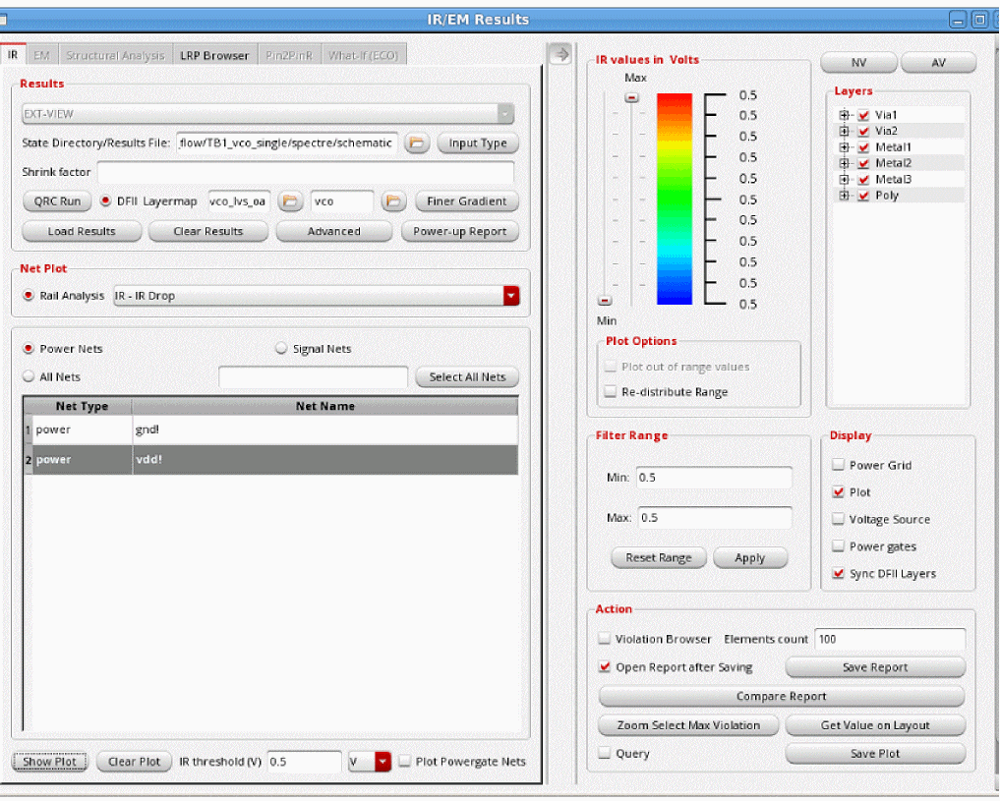 - Click Save to save the specified settings in a configuration file.
-
Click Load to automatically load settings saved in a previous run in the IR/EM Results form.
Figure 6-6 Viewing the IR Plot for All Power Nets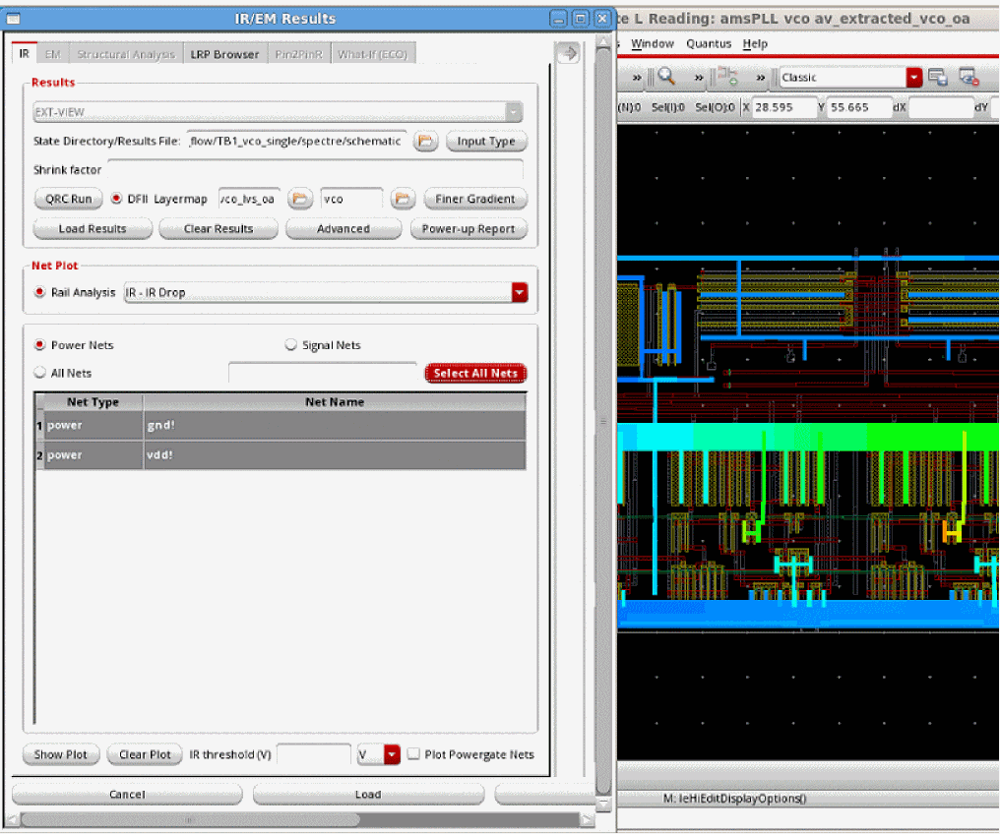Figure 6-7 Viewing IR Plot for Selected Signal Net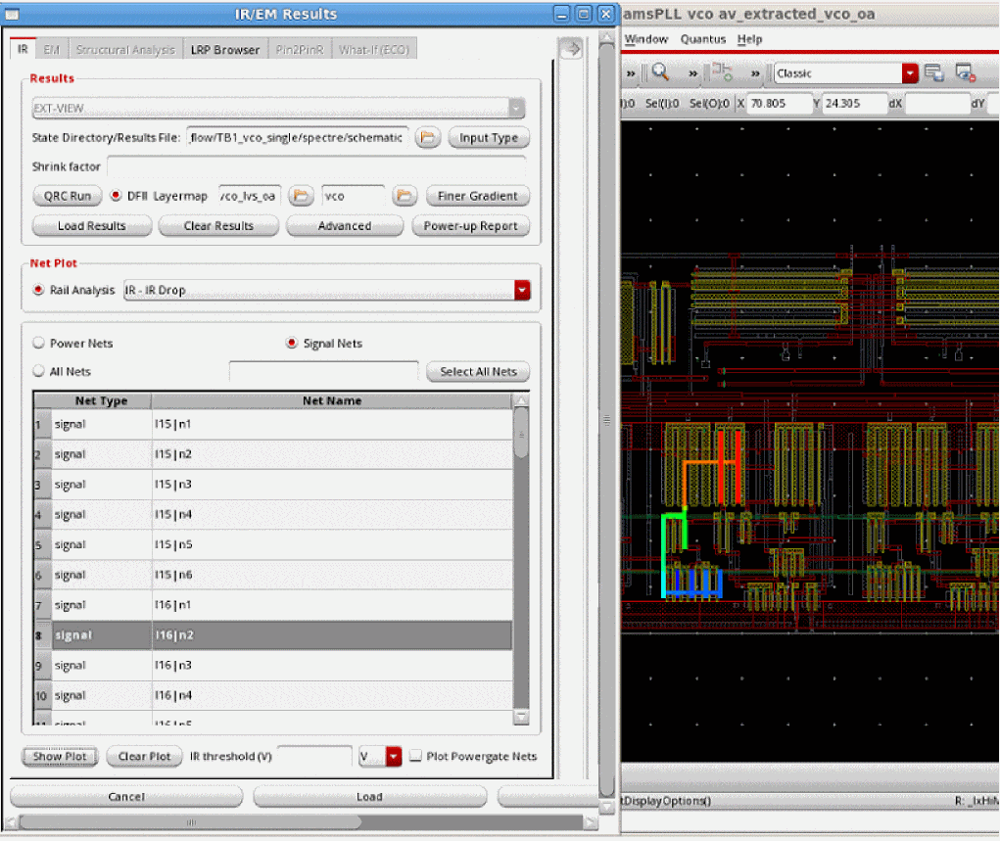
Displaying and Querying EMIR Results
Voltus-Fi-L lets you specify the plot display settings for the IR drop and EM plots that are displayed on the Virtuoso layout.
The plot display options include a Min - Max slider that lets you customize the range of violations you want to view. A continuous RGB gradient is used to highlight the worst violation regions in the design. The vast range of color options provided by the RGB gradient makes it easier to view a range of violations on the layout.
In addition to specifying settings for the plots displayed on the layout, there are options to query the layout for viewing specific violations. The results of the query are highlighted in the EM/IR tab of the Annotation Browser.
You can also compare reports that are generated for different analysis types either in the GUI or the batch mode. You can compare any two reports; one GUI and one batch report, two GUI reports, or even two batch reports. For this, Compare Report button is provided in the Display form.
For detailed descriptions of the display options and query feature in the GUI mode, see
The section, Displaying and Querying EMIR Results includes the following topics and subtopics:
- Viewing EMIR Violations in the Annotation Browser
- Querying EMIR Results
-
Specifying the Display Options for IR/EM Plots
- The following topics are covered in this section:
- Selecting Layers for Viewing Violations
- Customizing the Range for Viewing Violations
- Customizing the Display Options for Plots
- Viewing and Managing Violations on the Layout
- Viewing Worst Violations
- Viewing all Violations in Selected Area
- Querying Specific Points and Areas on the Layout for Resistor Information
- Saving the IR Drop Analysis Result Plots and Reports
- Comparing Reports
For the batch command flow of the Query feature, see Batch Command for RON Reports in the “Batch Mode Execution” chapter.
Types of IR Drop Analysis Plots
Following types of IR drop analysis results plots are available in the list in the Rail Analysis field in the IR/EM Results form.
- IR – IR Drop: analyzes and reports the voltage drop
- IRAVG – IR Avg Drop: analyzes and reports the average voltage drop
- RC – Resistor Current: analyzes and reports peak resistor currents
- RCAVG – Average Resistor Current: analyzes and reports average resistor currents
- RCRMS - RMS Resistor Current: analyzes and reports RMS resistor currents
Plotting the Least-Resistive Path
The least-resistive path (LRP) plot lets you identify the weakly-connected instances in the design during early stages of power planning. The resistance for an instance pin is calculated as the total resistance along the least resistance path. If an instance has multiple power pins connected to the power grid, the LRP plot uses the pin with the worst (highest) resistance value to plot the instance-based data. This plot highlights the current path for the selected instance to the voltage source. A long LRP usually results in high resistance and potentially high voltage drop.
In addition to identifying and displaying the worst IR drop violations, the LRP feature in Voltus-Fi-L lets you plot LRP on demand for any node. You can view the LRP for any high IR drop node by selecting it on the layout. There are two options provided in the GUI, Get Layout Node and Get Marker Node, to let you select a node on the GUI and view its LRP, and to select an object in the Annotation Browser and view the LRP for the node on the selected marker. For details, see The LRP Browser and Displaying LRP for the Node on the Selected Marker, respectively.
The use model for LRP analysis is detailed below.
To view the LRP plot for a net, perform the following steps after loading the IR drop analysis results:
-
Click Select Nets to select the net for which you want to view the LRP plot.
-
Click Show Plot. The LRP Browser tab in the IR/EM Results form gets enabled. This is shown below.
Figure 6-8 IR/EM Results Form – Plotting the Least-Resistive Path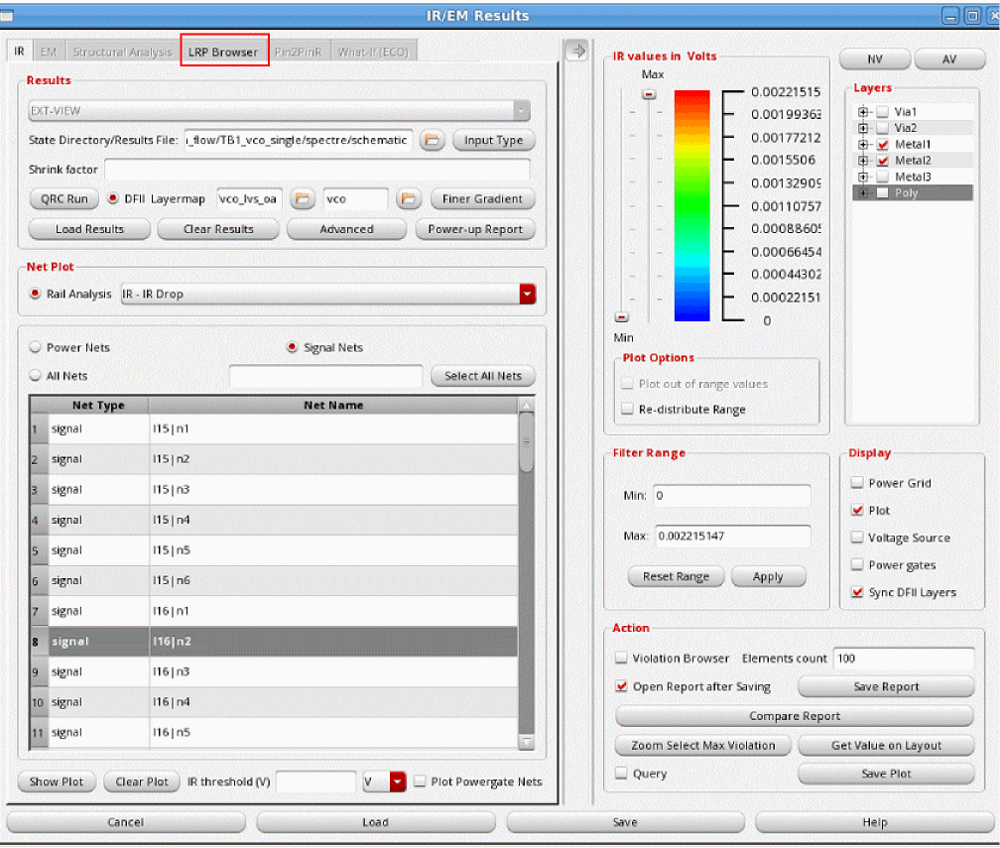
The LRP Browser
The LRP Browser tab lets you specify the nets, layers, and nodes for which you want to view the LRP plots. The various options provided for this tab are detailed below.
Voltus-Fi-L provides support in the form of tips about the information to be filled out in the various fields in the LRP Browser form. This tooltip appears when you hover the pointer over a field in the form. This is shown below.
Figure 6-9 Tooltips for LRP Browser Tab
To start, click the LRP Browser tab of the IR/EM Results form. The form shown below opens.
Figure 6-10 LRP Browser Tab of the IR/EM Results Form
There are two group boxes in this tab, the LRP Paths and Resistance Path.
- In the LRP Paths group box, specify the net for which you want to perform the LRP analysis in the Select Nets field. The net selected in the IR tab is selected by default.
- Click Compute LRP to compute the LRP values for all the nodes of the selected net. The information is populated in the Node ID - Node Name and the LRP Value columns of the table in the LRP Paths group box.
- Click Shorted Layers to short specific layers for the LRP analysis. For details, see Shorting Layers for LRP Analysis.
- Click Get layout Node to select a node on the layout. Click this button and then click anywhere in the Virtuoso layout window. The node-name text box will print information about the X- and Y- co-ordinates, and the Layer name for the node present nearest to the location of the click. The LRP path of the selected node will be shown in the table below.
- Click Get Marker Node to view the LRP values for a node, if present, on a selected marker. For this, enable the Annotation Browser, select a marker and click this button. If the marker is associated with a node name, the LRP for the node will be shown in the table below. For details, see Displaying LRP for the Node on the Selected Marker.
-
Type the name of the node in the Node Id or Name to retrieve the LRP value for the specific node. Node names can also be regular expressions. The LRP table shows all nodes matching the regular expression. This saves time otherwise taken to scroll through the list of nodes to find information for a specific node.
- Specify the Number of Paths or the number of violations that you want to view. By default, top 100 violations are listed.
- The table shows the LRP for the selected net to all instances or nodes defined for the net in the Node ID - Node Name column and their corresponding LRP values in the LRP Value column. For each instance, the table shows the cumulative resistance on the path.
- Select an instance in the list to view its LRP on the layout. When an instance is clicked, the LRP path is highlighted in red in the Virtuoso layout. This is shown in the image below.
-
In the Resistance Path group box of the LRP Browser tab, you can view the list of resistors for a path. For details of the columns in the table, see Resistance Path Group Box Table Information. Select Auto Zoom to automatically zoom to the resistor being selected in the path on the layout. The LRP path is highlighted with a white border and the resistor from the path is highlighted in red. This is shown below.
Figure 6-11 Least-Resistive Path for a Resistor Highlighted on the Virtuoso Layout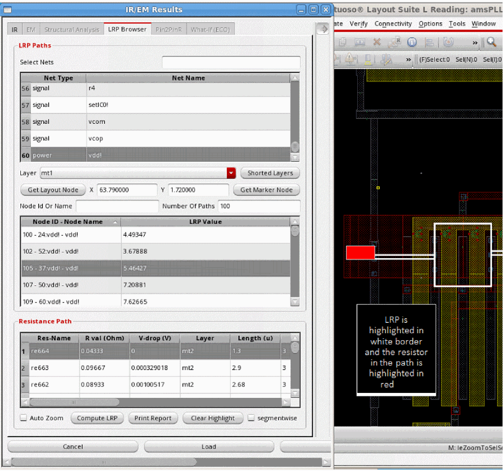 -
Click Print Report to print the LRP values of the specific resistors in a text file. The Select report file pop-up window opens. Specify the name of the report file and click Save. The report opens in the console. This is shown below.
Figure 6-12 Sample RLRP Report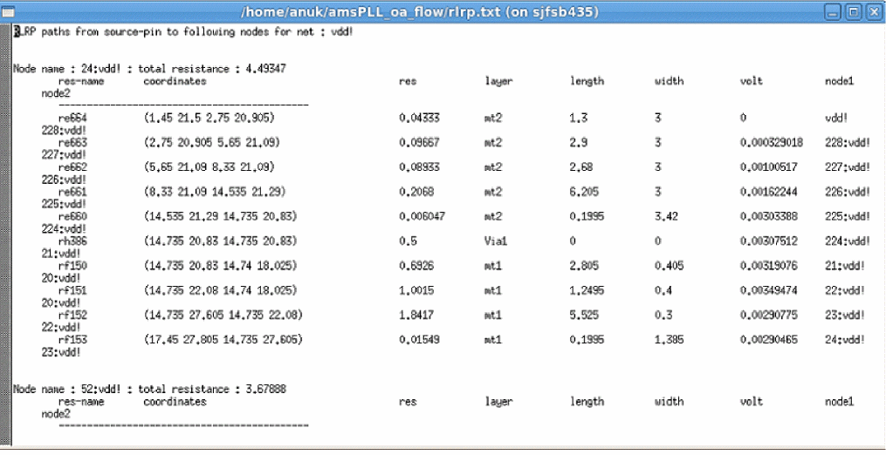You can also generate RLRP reports in the batch mode by using the print_rlrp_report command.
A sample report is shown in RLRP Report in the “IR Drop Analysis” chapter of the Voltus-Fi Custom Power Integrity Solution XL User Guide. - Click Clear Highlight to clear the LRP highlighted on the layout.
-
Check segmentwise to view the combined resistance values for a layer in the Resistance Path table. When this option is enabled, all the resistors on a layer, metal or via, will be merged into one segment for the purpose of LRP reporting. In the image below, the resistors,
rg12,rg13, andrg14on layermt3are shown in the Resistor Path table. This is the display when the segmentwise option is not selected.
Figure 6-13 Display of Resistor Paths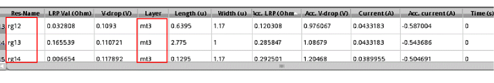In the image below, the resistors for the layer,mt3are combined to display the resistor path for the segment. This is highlighted in red in the image below.
Figure 6-14 Segment-wise Display of Resistor Paths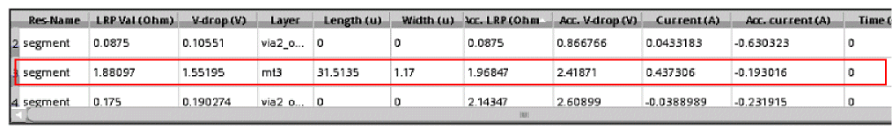In the above image, the resistors for the layer,mt3are combined to display the resistor path for the segment. This is highlighted in red in the above image.
Resistance Path Group Box Table Information
The Resistance Path table lists all the resistors in the LRP path for the node selected in the Node ID - Node Name table. You can click any row to highlight the resistor in the layout window.
A section of the Resistance Path table is shown in the image below. The details of the column information is provided subsequently.
Figure 6-15 Information in the Resistance Path Table
The following information is provided in the table:
- Res-Name: Name of the resistor on the layer
- R Val (Ohm): The resistance value of the resistor
- V-Drop (V): The voltage drop across the resistor
- Layer: Name of the layer on which the resistor is located
- Length (u): The length of the resistor in micron
- Width (u): The width of the resistor in micron
- Acc.LRP (ohm): The accumulative resistance along the LRP
- Acc.V-Drop (ohm): The accumulative voltage drop along the LRP
- Current (A): The current across the resistor
- Acc.Current (A): The accumulative current along the LRP
- Time: The simulation time captured from the simulation result file
- current-density (A/u): The Current Density across the resistor
- Location (u): The location of the resistor
Shorting Layers for LRP Analysis
While computing LRP for a node or instance, you can short specific layers. When you do this, all the resistance on the specified layer is shorted. That means, the LRP display shows a value of 0 for all resistors on the shorted layer. This is shown in the images below.
When you click Shorted layers, the Filters pop-up window opens. In this window, select the layer you want to short. You can short multiple layers.
For example, in the image below, layer Metal1 or mt1 is shorted.
Figure 6-16 Specifying the layers to be shorted for the LRP Analysis
When a layer is shorted, the resistance value information in the Resistance Path group box shows a value of 0 in the R val (Ohm) column for all the resistors on that layer. For example, in the image below, the LRP value for resistor rf147 on layer mt1 is 0.
Figure 6-17 LRP Value for Resistors on the Shorted Layer
Displaying LRP for the Node on the Selected Marker
You can display the LRP for a node on the selected marker in the Annotation Browser. When you select a violation marker in the Browser, it is highlighted on the layout. If the marker is associated with a node name, you can view the LRP for the node.
- In the IR tab, select the plot type and click Show Plot.
- In the Display form, select Violation Browser. The Annotation Browser window opens in the layout. Select a violation and the violation marker is displayed on the layout.
- In the LRP Browser tab, click Get Marker Node. The information for the node – the x- and y- co-ordinates and the layer name – on the marker is populated in the LRP browser tab.
-
Click the node name in the LRP table and then click Compute LRP to compute the LRP value for the node and to view the least-resistive path for the node on the layout.
An example is shown below.
Figure 6-18 Displaying LRP for the Node on the Selected Marker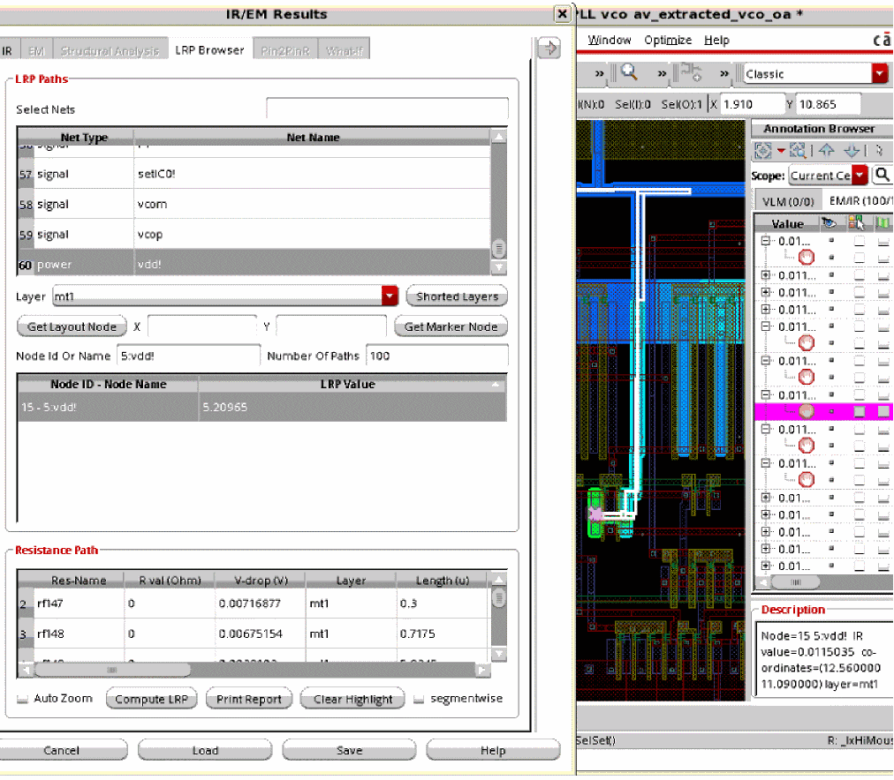
Generating EMIR Analysis Reports in Voltus-Fi-L
The following topics are covered in this section:
- Reports Generated Using the EMIR Control File
- Default Reports Generated by Voltus-Fi-L for EMIR Analysis
- RLRP Report
Reports Generated Using the EMIR Control File
You can generate both textual and html reports for EMIR results in Voltus-Fi-L from the simulation results by specifying the EMIR control file (emir.conf), the EMIR database file, and the output directory. In the EMIR control file, the emirutil command’s report option is set to text or html depending upon the required output.
For details, see
You can also see the EMIR Control FIle Options Supported in Voltus-Fi-XL in the “Data Preparation” chapter of the Voltus-Fi Custom Power Integrity Solution XL User Guide.
For details on how to specify variables using the emirutil command in the EMIR control file, see Using the emirutil Command in the EMIR Control File in the “Variables” chapter.
Default Reports Generated by Voltus-Fi-L for EMIR Analysis
By default, Voltus-Fi-L generates the following reports for EMIR analysis:
-
IR drop analysis reports with the extension,
#.rpt_ir -
EM analysis reports with the extension,
#.rpt_em -
Summary report (
summary.rpt), which includes reports for the IR drop and EM analyses performed in the current run
For details of the report formats and sample reports, see
RLRP Report
RLRP analysis report (RLRP.rpt) includes the LRP values of the instances or tap-nodes of the specified net.
For details of the report format and sample report, see
Reporting On-Resistance Values
Overview
Voltus-Fi-L reports the on-resistance (RON) values for all layers and devices between specified pairs of pins in a design. The software reports the combined resistance contribution of both pins in the pair and the contribution from each pin. The resistance values are reported in ohms.
For this feature, report_vfi_L_ron command has been provided. For details, see report_vfi_L_ron.
setenv ENABLE_VFI_L_RON_DATA_READING_FROM_PSF t
Generating the RON Report
This flow is supported only in the batch mode. To enable this flow, perform the following steps:
- Create a command file including the information below. This command file is then used to load results in Voltus-Fi and report RON.
-
Specify the above command file in Voltus-Fi as follows:
vfibatch –cmdcmd_file
The below set of commands are included in the main command file, main.cmd.
-
set_variable extViewExtraCmdFile “extViewExtraCmdFile”
Specifies the command file,extViewExtraCmdFile,for running EM analysis in batch mode in Voltus-Fi-L. For more information on the contents of this file, see Contents of the extViewExtraCmdFile. -
load_em_results_extview -i vsaEM_allpin_vavodb_voltus_fi.cmd
Loads the EM results stored in thevsaEM_allpin_vavodb_voltus_fi.cmdfile. -
report_vfi_L_ron -pin_pair_file pin_pair.txt -output_file output.rpt
Creates a RON report in theoutput.rptfile for the pin-pairs specified in thepin_pair.txtfile. -
vfibatch -cmd main.cmd
Themain.cmdfile is then used in Voltus-Fi, as shown above.
Contents of the extViewExtraCmdFile
The extracted-view data is loaded through the cmd_file, extViewExtraCmdFile. A sample command file for EM analysis is shown below.
;vsa batch mode command file
;common commands
_vsa_extracted_lib_cell_view “amsPLL” “vco” “av_extracted_sol”
_vsa_testbench_lib_cell_view “amsPLL” “TB1_vco_single” “schematic”
_vsa_simulation_directory “/custom/TB1_vco_single/spectre/schematic/”
_vsa_pres_cellname “presistor”
_vsa_analysis_data “TRANSIENT”
;commands for EM analysis
_vsa_qrc_run_directory “/custom/WORK/AV/LVS_emir”
_vsa_em_data_file “emDataFile.txt”
;_vsa_analyze_em "0" "1n"
_vsa_analyze_em
exit
Output
The RON report includes the following information:
- Voltage source names and their corresponding terminal/pin names, voltage values, and current values
- Total RON values for devices and wires for the specified pin pairs
- Parameters for the devices being used for calculating the device RON
- Layer-based wire RON for both pins in the pin-pair combinations
- Layer-based wire RON for each pin in the pin-pair combinations
Sample Pin-Pair File
Where D and S are names of pins separated by a space.
Sample RON Report
A sample RON report is shown below.
Return to top